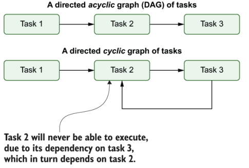
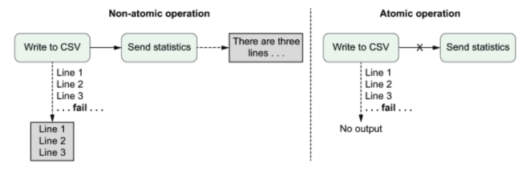
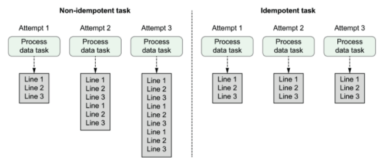
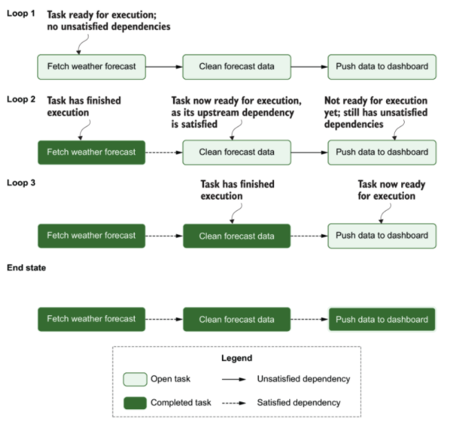
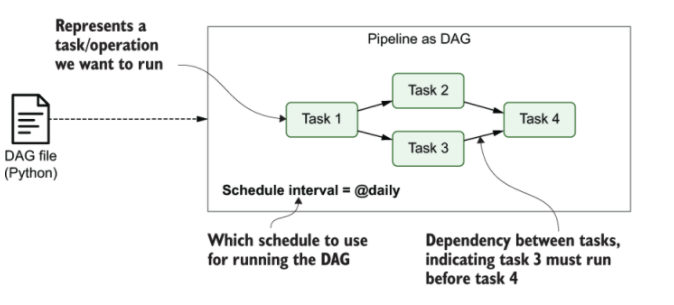
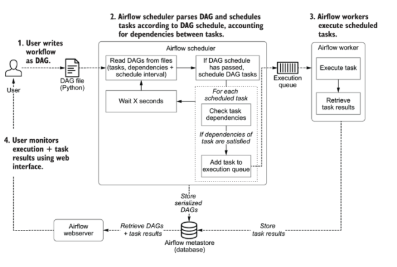
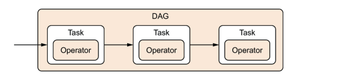

Data pipelines
con Apache
Airflow

Julian de Ruiter y Bas Harenslak
Def: Data pipeline
consiste en una serie de da tareas que se ejecutan de manera secuencial o paralela, dando como
resultado datos o información procesada

DAG's
DAG = diagram acyclic graph
Airflow representa los pipelines con diagramas DAG que son una representación en modelos de caja del flujo de datos acíclico

Caracteristicas de un DAG
Atomicidad
Idempotencia
DAG - Ciclo básico
Introducción a Airflow
Airflow esta basado en tres pilares para funcionar
- scheduler es el encargado de mirar que tareas están listas para ejecutarse y las pasa a la cola de ejecución
- worker es el encargado de ejecutar las tareas que se encuentran en la cola de ejecución
- webserver es un servidor web con GUI que nos permite interactuar con los DAG's y ver el feedback de cada uno de ellos

Expandiendo el funcionamiento de Airflow
DAG's en Airflow
Construyendo un DAG
import json
import pathlib
import airflow
import requests
import requests.exceptions as requests_exceptions
from airflow import DAG
from airflow.operators.bash import BashOperator
from airflow.operators.python import PythonOperator
dag = DAG(
dag_id="download_rocket_launches",
start_date=airflow.utils.dates.days_ago(14),
schedule_interval=None,
)
download_launches = BashOperator(
task_id="download_launches",
bash_command="curl -o /tmp/launches.json -L 'https://ll.thespacedevs.com/2.0.0/launch/upcoming'",
dag=dag,
)
def _get_pictures():
# Ensure directory exists
pathlib.Path("/tmp/images").mkdir(parents=True, exist_ok=True)
# Download all pictures in launches.json
with open("/tmp/launches.json") as f:
launches = json.load(f)
image_urls = [launch["image"] for launch in launches["results"]]
for image_url in image_urls:
try:
response = requests.get(image_url)
image_filename = image_url.split("/")[-1]
target_file = f"/tmp/images/{image_filename}"
with open(target_file, "wb") as f:
f.write(response.content)
print(f"Downloaded {image_url} to {target_file}")
except requests_exceptions.MissingSchema:
print(f"{image_url} appears to be an invalid URL.")
except requests_exceptions.ConnectionError:
print(f"Could not connect to {image_url}.")
get_pictures = PythonOperator(
task_id="get_pictures",
python_callable=_get_pictures,
dag=dag,
)
notify = BashOperator(
task_id="notify",
bash_command='echo "There are now $(ls /tmp/images/ | wc -l) images."',
dag=dag,
)
download_launches >> get_pictures >> notify